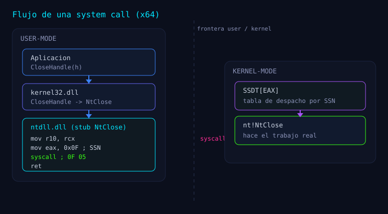

Serie: Kagemusha
Kagemusha — Fase 4: ejecución indirecta real
Kagemusha — Fase 4: ejecución indirecta real
Esta entrada documenta la Fase 4 (M4) del repositorio, tal como está registrada en su README.md, en docs/plan-arquitectura-v1.md y en los transcripts de docs/evidencias/.
Del README: "Objetivo. Ejecutar una función
Nt*mediante un trampolín ASM que salta alsyscall;retde ntdll (indirecto puro)."

Implementación (según el README)
src/core/core.c— tablas del núcleo (g_SsnTable,g_GadgetTable) eKageInitialize
transaccional.
src/asm/syscalls.asm—KageNtCloseStub:mov r10,rcx; mov eax,[g_SsnTable]; jmp [g_GadgetTable].
Sin 0F 05. Etiquetas KageStubStart / KageStubEnd.
src/wrappers/wrappers.c—NtClose_I(HANDLE)→NTSTATUSreal del kernel.include/kage/core.h,include/kage/wrappers.h.
El stub, desensamblado (de docs/evidencias/m4_return.txt)
0:000> u Kagemusha!KageNtCloseStub L5
Kagemusha!KageStubStart:
00007ff6`c7712db0 4c8bd1 mov r10,rcx
00007ff6`c7712db3 8b0527a90800 mov eax,dword ptr [Kagemusha!g_SsnTable (00007ff6`c779d6e0)]
00007ff6`c7712db9 ff2521a80800 jmp qword ptr [Kagemusha!g_GadgetTable (00007ff6`c779d5e0)]
Kagemusha!KageStubEnd:
00007ff6`c7712dbf cc int 3
Kagemusha!KageHelloAsm:
00007ff6`c7712dc0 b82a000000 mov eax,2AhEl stub no contiene syscall: solo prepara (r10, eax) y salta. Tras KageStubEnd aparece un int 3 (byte CC) en el desensamblado.
Cómo funciona (según el README)
"El wrapper llama al stub; el stub mueve el primer argumento a
R10(ABI syscall), carga el SSN enEAXyjmpal gadget de ntdll. Elretdel gadget regresa al wrapper (eljmppreservó la dirección de retorno). Elsyscallse ejecuta dentro de ntdll."
El jmp (tail call) es lo que explica el plan de arquitectura:
"un stub que termina en
jmp(tail call) hereda intactos pila y dirección de retorno, de modo que elretdel gadget de ntdll regresa directamente al wrapper C" (plan-arquitectura-v1.md).
Pruebas (según el README)
T9 (ejecución real) + T10 (stub sin 0F 05) → PASS.
NtClose_I(0xDEADBEEF)→STATUS_INVALID_HANDLE(0xC0000008).NtClose_I(handle de NUL)→STATUS_SUCCESS(0).- Stub indirecto: 0 bytes
0F 05. - Módulo completo: 0 instrucciones
syscall(tools/verify.ps1,dumpbina nivel de mnemónico).
Evidencia (docs/evidencias/m4.txt, extracto real)
0:000> bp Kagemusha!NtClose_I
0:000> g
Breakpoint 0 hit
Kagemusha!NtClose_I:
00007ff7`cce02d90 48894c2408 mov qword ptr [rsp+8],rcx ss:00000022`292ffdf0=0000000000000003
0:000> ? poi(Kagemusha!g_GadgetTable)
Evaluate expression: 140721521954722 = 00007ffc`48540fa2
0:000> bp poi(Kagemusha!g_GadgetTable)
0:000> g
Breakpoint 1 hit
ntdll!NtClose+0x12:
00007ffc`48540fa2 0f05 syscall
0:000> r
rax=000000000000000f rbx=00000126d4bc6fc0 rcx=00000000deadbeef
rdx=00000126d4960000 rsi=0000000000000000 rdi=00000126d4bcd580
rip=00007ffc48540fa2 rsp=00000022292ffdb8 rbp=0000000000000000
r8=7ffffffffffffffc r9=0000000000000000 r10=00000000deadbeef
...
ntdll!NtClose+0x12:
00007ffc`48540fa2 0f05 syscall
0:000> lm m ntdll
start end module name
00007ffc`483e0000 00007ffc`48647000 ntdll (pdb symbols)
0:000> u @rip L2
ntdll!NtClose+0x12:
00007ffc`48540fa2 0f05 syscall
00007ffc`48540fa4 c3 retLectura: el syscall se ejecuta en 00007ffc48540fa2, que cae dentro de ntdll (483e0000–48647000). RAX = 0x0F es el SSN de NtClose. RCX y R10 valen 0xdeadbeef (ABI).
Reproducir (del README):
cdbX64 -cf tools\cdb_scripts\m4_nclose.txt -logo docs\evidencias\m4.txt bin\Kagemusha.exe
powershell -File tools\verify.ps1M4+ — Experimentos de verificación (del README)
1. La línea de retorno vuelve a nuestro código (docs/evidencias/m4_return.txt)
0:000> dps @rsp L2
00000087`59eff9f8 00007ff6`c7712da3 Kagemusha!NtClose_I+0x13
00000087`59effa00 00007ff6`c7793628 Kagemusha!_iob+0x58
0:000> ln poi(@rsp)
(00007ff6`c7712d90) Kagemusha!NtClose_I+0x13 | (00007ff6`c7712db0) Kagemusha!KageStubStartDel README: "El stub no contiene call ni syscall; el jmp preserva el frame y el ret del gadget regresa a NtClose_I."
2. El SSN de la tabla gobierna el syscall (docs/evidencias/m4_falsify.txt)
0:000> ew Kagemusha!g_SsnTable 0x55
0:000> bp poi(Kagemusha!g_GadgetTable)
0:000> g
Breakpoint 1 hit
ntdll!NtClose+0x12:
00007ffc`48540fa2 0f05 syscall
0:000> r eax
eax=55
0:000> r rip
rip=00007ffc48540fa2Del README: "Se verifica por observación sin ejecutar el syscall alterado (experimento seguro)."
3. Repetibilidad
Del README: "T11 ejecuta 1000 NtClose_I consecutivos → resultado idéntico (PASS)."
El workflow de verificación de 6 puntos (del plan de arquitectura)
docs/plan-arquitectura-v1.md (§6) exige seis comprobaciones para M4:
- El
syscallse ejecuta DENTRO de ntdll:bp <VA_gadget>se alcanza ylm m ntdllmuestra
rip ∈ [start, end].
- El SSN viaja en
EAXy es el correcto:r @eax== valor de la tabla; yr @r10 == r @rcx. - Nuestro módulo no contiene la instrucción:
dumpbin /disasm ... | findstr syscall→ 0. - La dirección de retorno vuelve a nuestro flujo:
dps @rspapunta aKagemusha!NtClose_I+.... - Contraste pedagógico: comparar el stack trace de la ruta nativa (por el stub) con la
indirecta.
- Exactitud semántica: T9 (README) / T5 (numeración del plan §6) devuelven el mismo
NTSTATUSque la API nativa.
Riesgos declarados en el plan (§7)
Del plan de arquitectura, para esta fase y el indirecto "puro":
| Riesgo | Mitigación v1 |
|---|---|
| Retorno visible: stack walks señalan a Kagemusha como caller | Fuera de alcance v1 (stack spoofing = v2); documentado |
| Hot-patching de ntdll tras el init (gadget re-escrito) | Re-validación por llamada (flag), prevista |
| SSN distintos por build | Resolución siempre en runtime |
| Stub hookeado por un EDR | FreshyCalls no lee el stub (inmunidad por diseño) |
| Gadget elegido a mitad de instrucción | Solo candidatos anclados a inicio de stub + patrón exacto 0F 05 C3 |
Resumen (del README)
NtClose_I(0xDEADBEEF)=0xC0000008,NtClose_I(handle válido)=0x00000000.syscallobservado enntdll; módulo sin instruccionessyscall.- Suite T9/T10/T11 en verde.
Cómo sigue la serie
Toda la serie (navegable): Kagemusha.
Bibliografía y referencias
- Fuentes primarias:
README.md,docs/plan-arquitectura-v1.md,docs/evidencias/m4.txt,
m4_return.txt, m4_falsify.txt, tools/cdb_scripts/m4_*.txt, src/core/core.c, src/asm/syscalls.asm, src/wrappers/wrappers.c.
- Russinovich, Solomon, Ionescu — Windows Internals, 7.ª ed..
- Microsoft Learn — x64 calling convention / Ntdll.
Aprender a romper para poder defender.